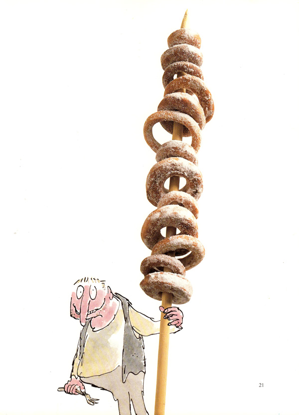

Bunce's Doughnuts

Description
Bunce was a duck-and-goose farmer. He kept thousands of ducks and geese. He was a kind of pot-bellied dwarf. He was so short his chin would have been underwater in the shallow end of any swimming-pool in the world. His food was doughnuts and goose-livers. He mashed the livers into a disgusting paste and then stuffed the paste into the doughnuts. This diet gave him a tummy-ache and a beastly temper.
Ingredients
- ½ cup light brown sugar, firmly packed
- 4 tablespoons unsalted butter
- 1 egg, lightly beaten
- 1 pound all-purpose flour
- ½ tablespoon baking powder
- ½ tablespoon cinnamon
- a large pinch of salt
- 2 tablespoons hot water
- ¼ teaspoon vanilla extract
- ½ cup milk
- vegetable oil for deep frying
- sugar for coating
Steps
- Cream the brown sugar and butter until pale and creamy — this can be done using a food processor.
- Gradually add the egg until blended.
- Add the remaining ingredients. The dough should be fairly stiff but smooth.
- Cover with plastic wrap and refrigerate for 2 hours
- Divide the dough in half and return one half to the refrigerator.
- On a floured surface roll out the other half of the dough to a quarter-inch thick. With the cutters cut out as many doughnuts as possible, using the large one to cut the doughnut shape and the smaller one to make the hole.
- Gather up the scraps and roll and cut out as many additional doughnuts as possible. Repeat the rolling and cutting with the remaining half of the dough.
- Heat the vegetable oil to 375ºF.
- Fry the doughnuts in small batches, turning once, until deep golden brown.
- Drain on paper towels.
- Put the sugar in a bowl and add a few doughnuts at a time, shaking them in the sugar until coated. Serve immediately.